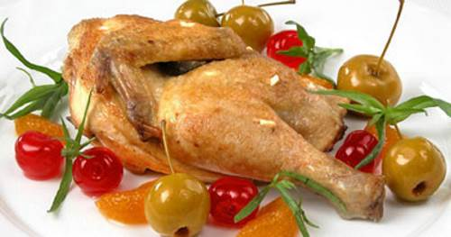
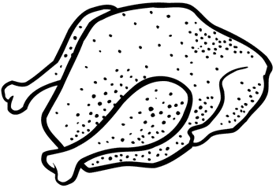

Шашлык из курицы на сковородеПтицу обработать: у цыпленка-бройлера удалить шейку, утолщение ножек, хребтовую кость, у курицы — шейку, крылышки, хребтовую кость, утолщение ножек.
Разделить на куски (4–5 кусочков на порцию), положить в посуду, посолить, поперчить, добавить немного лимонной кислоты, перемешать и мариновать 1,5–2 часа. Маринованные кусочки курицы обжарить на сковороде. При подаче шашлык гарнировать дольками свежих помидоров или огурцов, кольцами репчатого лука или зеленым луком и дольками лимона. Отдельно подать кетчуп.
Состав: цыпленок или курица — 1 кг, жир животный — 60 г, кетчуп — 60 г, лимонная кислота, специи, гарнир, свежие помидоры или огурцы — 400 г, лук зеленый — 100 г, лук репчатый — 100 г, лимон — 1 шт.
Шашлык из курицы с кетчупомПтицу обработать и замариновать, как указано в предыдущем рецепте. Маринованные кусочки надеть на шпажку вместе с маринованным луком и жарить над раскаленными углями. Подавать с кетчупом.
Состав: цыпленок пли курица — 1 кг, лук репчатый — 120 г, лимонная кислота — 2 г, кетчуп — 60 г, специи, соль.
Шашлык «Отличный»Курицу нарубить на кусочки весом 30–40 г, добавить нашинкованный лук, замариновать в лимонной кислоте или уксусе, выдержать на холоде 2–3 часа. Нанизать на шпажку и жарить на сковороде.
Состав: курица — 900 г, лук — 120 г, лимонная кислота или уксус — 60 г, соль, перец.
Шашлык из курицыТушку курицы нарубить примерно на одинаковые кусочки по 30–40 г, добавить нашинкованный лук. Мариновать в растворе лимонной кислоты или в винном уксусе, выдержав в нем мясо на холоде 2–3 часа. Нанизать кусочки птицы на шампура и жарить над углями, смазывая их растительным маслом и поливая оставшимся маринадом. Подавать шашлык горячим с натуральными свежими овощами.
Шашлык из тушки птицыОтваренную до полуготовности тушку птицы (курицы, утки) натереть внутри солью, специями, красным и черным перцем и слегка смазать растительным маслом. Крепко связать крылышки и ножки и всю тушку птицы снаружи так же слегка смазать растительным маслом с солью. Одеть тушку на два шампура, чтобы было удобнее поворачивать. Жарить птицу над углями до готовности. Готовую тушку разрубить на куски, положить в пергаминную бумагу, пересыпать рубленным чесноком и зеленью, завернуть и подержать в бумаге 10 минут, чтобы придать шашлыку аромат. Если есть возможность, вместо бумаги использовать листья ореха.
Куриное мясо нарезать небольшими кусочками и натереть смесью из мелко нарезанного лука, растертого чеснока, очищенного, поджаренного и растолченного арахиса и растительного масла. Оставить подготовленное мясо на полчаса, затем посолить и поперчить. Насадить кусочки мяса очень плотно на шампуры или шпажки и, непрерывно поворачивая их, обжарить над горячими углями до готовности. К горячим шашлыкам подать острый кетчуп.
Состав: чеснок — 1 долька, лук — 1 шт., арахис — 2 ст. ложки, растительное масло — 1 ст. ложка.
Шашлык из куриных грудинокКуриное филе нарезать некрупными кусочками, сложить в эмалированную кастрюлю, переложить луком, посолить, поперчить и дать постоять 1–1,5 часа. После чего нанизать кусочки на шампура и обжарить до готовности над раскаленными углями.
При подаче посыпать рубленой зеленью и полить лимонным соком.
Состав: куриное филе — 1 кг, репчатый лук — 2–3 шт., лимон — 1 шт., соль, перец, зелень.
Шашлык из цыпленкаЦыплят для шашлыка предварительно очистить, помыть и разделить на крупные куски, посолить, поперчить. Подготовленные куски насадить на шампура и жарить до готовности над раскаленными углями.
При подаче выжать на шашлык сок лимона, посыпать нарубленной зеленью и луком, нарезанным кольцами.
Состав: цыплята — 4 шт., репчатый лук — 2–3 шт., лимоны — 2 шт., зелень, соль, перец.
Шашлык из уткиПодготовленное утиное мясо нарезать кусками, посолить, поперчить, нанизать на шампура и обжарить до готовности над раскаленными углями.
Подать со свежими овощами, луком, сумахом или лимоном, нарезанным дольками.
Состав: утиное мясо — 1 кг, репчатый лук — 2 шт., соль, перец, сумах, свежие овощи, лимон — 1 шт.
Шашлык из перепелок или куропатокВыпотрошенные тушки перепелок или куропаток положить в подсоленную воду на 15 минут. Затем снять с них кожу, обмакнуть тушки в растопленное масло, посыпать молотым ажгоном, черным перцем и обвалять в муке. Нанизать тушки птиц на шампуры и жарить над углями, приготовленными из веток можжевельника. В процессе жаренья время от времени посыпать тушки мукой, особенно, когда с них начнет выделяться сок. Подать шашлык горячим с овощами и острыми приправами.
Тушки перепелов выпотрошить, тщательно промыть, посолить, поперчить.
Насадить на шампура и жарить над раскаленными углями до готовности.
Подавать с зеленью и свежими овощами.
Состав: перепела — 6–8 шт., соль, перец, зелень, свежие овощи.
Шашлык из куриной печениПодготовленную печень нанизать на шампура вперемежку с кусочками курдюка. Так как куриная печень очень нежная, жарить над раскаленными углями 5–7 минут.
Посолить, поперчить в конце готовки. При подаче посыпать зеленью.
Состав: печень — 1 кг, курдючный жир — 100 г, соль, перец, зелень.
Шашлык из печени птицыОбработанную гусиную или индюшиную печень нарезать на кусочки и ошпарить кипятком. Нанизать на шпажки или шампуры вперемежку с ломтиками свиной копченой грудинки и предварительно обжаренными шляпками свежих шампиньонов. Посыпать шашлыки солью, молотым перцем и жарить над подернутыми пеплом углями до готовности.
Шашлык из куриных крылышекПодготовленные крылышки посолить, поперчить и нанизать на шампура. Жарить короткое время над раскаленными углями, часто поворачивая. Подать с луком, зеленью, наршарабом.
Состав: крылышки — 1 кг, репчатый лук — 2–3 шт., наршараб, соль, перец, зелень.
Шашлык из куриных желудочковПредварительно очищенные желудочки тщательно помыть, обсушить и сложить в эмалированный таз, посолить, поперчить, смешать с нарезанным луком и лимонным соком. Дать постоять 40–50 минут. После чего нанизать подготовленные желудочки на шампура и обжарить над раскаленными углями до готовности, часто поворачивая. Затем сложить желудочки в кастрюлю, предварительно уложив на ее дно лук из бастурмы, закрыть крышкой и потомить их на медленном огне еще минут 20–30.
Подать с зеленью и овощами.
Состав: желудочки — 1 кг, соль, перец, репчатый лук — 2 шт., лимон — 1 шт., зелень, сумах.
Цыплята на вертеле с картофелемВыпотрошенные и посоленные тушки цыплят надеть на вертел, поставить его над раскаленными углями и поджарить цыплят, поворачивая вертел, чтобы не подгорали. Во время жаренья их надо непрерывно смазывать маслом и слегка смачивать водой, пользуясь веничком из перьев. Незадолго до окончания смазать и дать цыплятам подрумяниться. Когда они будут готовы, снять с вертела, разрубить пополам и подать с гарниром из жареного картофеля с салатом или солеными огурцами. При желании можно смочить цыплят два-три раза во время жаренья чесноком, толченным вместе с солью.
Состав: цыпленок — 1 кг, сливочное масло — 40 г, картофель — 600 г, салат или соленые огурцы — 160 г, соль.
Птица на вертелеС очищенных от перьев цыплят снять пленки, осмолить, промыть и осушить при помощи полотенца. Поперчить и посолить тушки как снаружи, так и внутри. Связать тушки шпагатом так, чтобы крылышки и лапки были плотно прижаты к тушке (все это лучше сделать дома). Насадив цыплят на длинный вертел, закрепить его на вбитых в землю кольях с распорками так, чтобы цыплята находились над раскаленными углями на расстоянии 25–30 см. Жарить цыплят нужно не менее 45 минут, медленно поворачивая вертел и время от времени поливая тушки растопленным маслом. Стекающий на угли жир образует вспышки пламени. Если они продолжительны, на цыплят надо сбрызгивать водой. Температуру костра следует поддерживать, добавляя раскаленные угли с запасного костра. Если над углями поставить железную решетку-гриль, то это будет способствовать ровному распределению жара.
При обжарке цыплят, дичи, крупных кусков мяса, крупной рыбы не следует спешить вертеть шампур. Нужно дать продукту не только зарумяниться, но и хорошо прогреться внутри. Готовые цыплята должны быть коричневого цвета, сочными и ароматными. Их следует освободить от шпагата, разрубить вдоль на две или четыре части и подать к столу. К цыплятам можно подать свежие помидоры и огурцы, консервированные фрукты.
Таким же образом можно зажарить курицу, индейку, утку, небольшого гуся.
Состав: цыплята средней величины — 3 шт., масло сливочное — 50 г, соль и перец.

Индейка на вертеле
Тушку молодой индейки приготовить к жарке: филейную часть покрыть тонкими ломтиками шпика, прикрепленными к тушке шпагатом, посолить изнутри и снаружи, посыпать черным перцем и одеть на вертел, жарить индейку надо над горячими углями, медленно переворачивая вертел и периодически поливая тушку растопленным маслом. Готовую индейку нарезать на куски и разложить на блюде, загарнировать тушеными каштанами, рисом с потрохами индейки и изюмом, жареным картофелем, нарезанным кружками. Подать с салатом по выбору.
Состав: молодая индейка — 2 кг, шпик — 100 г, сливочное масло — 100 г, молотый черный перец — 1 г.
Перепелка на вертелеОбработанные и выпотрошенные тушки перепелок тщательно промыть, посыпать солью, перцем, заправить в «кармашек», слегка смазать жиром, обвалять в муке, надеть на шпажки и жарить на углях до образования румяной корочки. При подаче обжаренные тушки перепелок снять со шпажки и подать вместе с жареными помидорами, нашинкованным репчатым луком и зеленью.
Состав: перепелки — 8 шт., жир — 40 г, лук репчатый — 80 г, помидоры — 400 г, мука — 60 г, зелень — 40 г, соль, специи.
Цыпленок на решеткеПодготовленного молодого цыпленка промыть в холодной воде, отсушить на салфетке и разрезать вдоль хребта, раскрыть тушку, слегка придавить и распластать. Отбитую тушку посолить, сбрызнуть растопленным или оливковым маслом, положить в противень с небольшим количеством масла и поставить в горячий жарочный шкаф на 10–15 минут, после чего вынуть и дать остыть. Осторожно устранить мелкие кости, следя за тем, чтобы не разорвать мясо, снова посолить с обеих сторон, посыпать черным перцем, сбрызнуть растопленным маслом и обжарить с обеих сторон на решетке. Готового цыпленка можно загарнировать разнообразными гарнирами.
Состав: цыпленок — 1,2 кг, оливковое масло — 100 г, молотый черный перец — 1 г.
Цыпленок на решетке с кашкаваломГотовить, как описано выше, но загарнировать жаренными на решетке сосисками, нарезанными кусочками, мелкими помидорами, фаршированными хлебной крошкой и тертым кашкавалом, поджаренным на масле картофелем, вынутым выемкой в виде лещинных орехов, зеленым горошком и тонкими ломтиками бекона, поджаренными на решетке. Готового цыпленка нарезать на куски и разложить на блюде между гарнирами. Отдельно подать соус.
Состав: цыпленок — 1,2 кг, оливковое масло — 50 г, сливочное масло — 150 г, хлебная крошка — 200 г, кашкавал — 50 г, чеснок — 20 г, петрушка — 10 г, сосиски — 150 г, бекон -100 г, картофель — 500 г, кабачки — 500 г, свежий горошек — 250 г, соус — 250 г, помидоры — 250 г.
Цыпленок на решетке по-русскиТушку цыпленка подготовить, как для жарки на решетке. Очищенное от костей мясо нашпиговать с внутренней стороны тонкими ломтиками шпика, посолить, посыпать черным перцем, сбрызнуть растопленным маслом и жарить на решетке, смазывая растопленным маслом. Готового цыпленка нарезать на порции, разложить на блюде.
Состав: цыпленок — 1,2 кг, оливковое масло — 100 г, сливочное масло — 100 г, шпик — 160 г, молотый черный перец — 1 г, картофель — 750 г, хлебные крутоны — 150 г, гусиная печенка — 100 г, соус — 250 г.
Цыпленок в сухарях на решеткеПодготовленную тушку цыпленка без костей смочить в растопленном масле, запанировать в хлебных крошках и жарить на решетке. Загарнировать картофелем и залить соусом, приготовленным из костей цыпленка. По желанию этот соус можно заменить очень жидким томатным соусом. Подать горячим с салатом по выбору.
Состав: цыпленок — 1,2 кг, сливочное масло — 150 г, оливковое масло — 50 г, хлебная крошка — 150 г, картофель — 1 кг, мясной или томатный соус — 250 г.
Маринованный цыпленок, жаренный на решеткеРепчатый лук мелко нарубить, чеснок растолочь, добавить сливки и приправить черным перцем и кориандром. Полученный маринад развести водой и разогреть, но не кипятить и оставить настояться в течение 20 минут. Подготовленных цыплят разрезать пополам, отбить, натереть солью и черным перцем, залить охлажденным маринадом и оставить на ночь. Затем поместить их на решетку и запечь, часто поливая растопленным сливочным маслом и маринадом. Когда мясо станет мягким, его можно подавать к столу, полив остатками маринада и растопленным сливочным маслом, смешанными с тмином. На гарнир подать рассыпчатый рис с белым хлебом.
Состав: цыпленок — 1 кг, чеснок — 50 г, лук — 150 г, сливки — 250 г, вода — 600 г, перец — 1 ч. ложка, лимон — 2 шт., кориандр молотый — 2 ч. ложки, разогретое масло — 6 ст. ложек, соль, перец, тмин.
Индейка на решеткеДля жарки на решетке следует выбрать молодую индейку. Выпотрошить ее, разрезать вдоль хребта, раскрыть, слегка придавить и распластать, посолить, сбрызнуть маслом, положить на противень и подрумянить в сильно нагретой жарочной печи (10–15 минут), после чего дать остыть. Осторожно, не разрывая мяса, удалить хребет и ребра, посолить, посыпать черным перцем, смочить в растопленном масле, запанировать в хлебных крошках и сухарях и поджарить со всех сторон на решетке.
Готовую индейку загарнировать различными гарнирами, как, например, зеленым горошком с маслом, жареным картофелем и пр. Подать соус, приготовленный из костей, соус с каперсами и пр. Отдельно подать салат по выбору.
Состав: молодая индейка — 2 кг, сливочное масло — 150 г, хлебная крошка — 150 г, молотый черный перец — 1 г.
Индейка на решетке с кашкаваломПодготовить и жарить, как описано выше, загарнировать картофелем, нарезанным соломкой, тонкими ломтиками копченого бекона или свиной грудинки, поджаренными на решетке, нарезанными кусочками длиной в 2–3 см сосисками, поджаренными на решетке, зеленой фасолью с маслом и помидорами, фаршированными хлебной крошкой и кашкавалом. Залить мясным соком, заправленным томатным соусом. Подать с салатом по выбору.
Состав: молодая индейка — 2 кг, сливочное масло — 200 г, хлебная крошка — 500 г, картофель — 300 г, бекон — 150 г, сосиски — 200 г, зеленая фасоль — 300 г, помидоры -400 г, кашкавал — 100 г.
Перепела на вертеле с зиройОчищенных перепелок положить на 10–15 минут в подсоленную воду. Затем нанизать на вертел, обмакнуть в растопленное масло, посыпать молотой зирой, черным перцем, мукой и жарить над углями, переворачивая время от времени, до образования красной корочки. Если из мяса начнет выделяться сочок, необходимо присыпать мукой.
Перепелок подать в тарелках, не снимая с вертела. Отдельно подать нашинкованный лук с тмином, огурцы или помидоры.
Состав: перепелки — 6 шт., топленое масло — 50 г, мука — 3–4 ст. ложки, молотая зира, черный перец, соль.
Люля-кебаб из цыпленкаМякоть пропустить через мясорубку с луком и курдюком. Посолить, поперчить, фарш тщательно перемешать и поставить на 20 минут в холодильник. После этого сформовать на шампурах люля и обжарить над раскаленными углями. Подать с зеленью, наршарабом, луком.
Состав: очищенное мясо цыплят — 1 кг, репчатый лук — 2–3 шт., курдючный жир -100 г, соль, перец, наршараб, зелень.
Люля-кебаб из курицыОчищенную мякоть без шкурки пропустить через мясорубку вместе с курдюком и луком. Фарш посолить, поперчить, тщательно перемешать, после чего поместить его на 20 минут в холодильник.
Из подготовленного таким образом фарша на шампурах сформовать люля в виде сарделек и жарить над раскаленными углями до готовности. Подать люля-кебаб с луком, нарезанным кольцами, и свежими овощами.
Состав: куриное мясо — 1 кг, курдючный жир — 100–150 г, репчатый лук — 3–4 шт., соль, перец.
Люля-кебаб из индейкиПодготовленное мясо индейки без шкурки вместе с луком, курдюком и орехами пропустить через мясорубку, посолить, поперчить, вымешать и поставить фарш на 20 минут в холодильник. Сформовать на шампурах люля в виде сарделек и обжарить над углями до готовности. Чтобы мясо не прилипало к рукам, используют соленую воду.
Подать с сумахом и свежими овощами, зеленью.
Состав: мясо индейки — 1 кг, репчатый лук — 2–3 шт., курдючный жир — 100–150 г, соль, перец, несколько ядер грецких орехов.
Курица, запеченная в глинеВзять несколько килограмм глины, из которой делают горшки, несколько камней и сухих поленьев. Кроме того, понадобится одна неощипанная курица и коробок спичек. Курицу надо выпотрошить и вымыть. Ощипывать ее не нужно. Курицу поверх перьев хорошенько обмазать глиной. В таком виде поместить ее между камнями, а под ними развести костер из хвороста. Через час обжига глиняную форму осторожно расколоть. Перья остаются в глине.